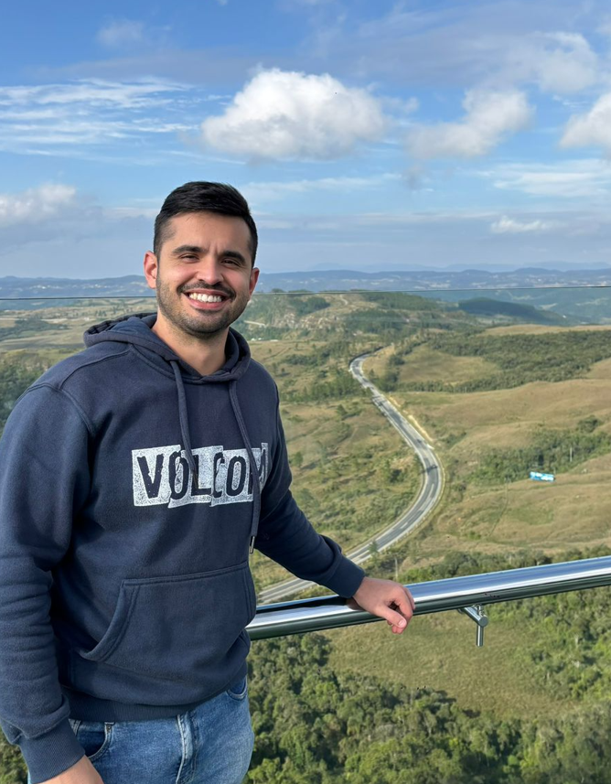

Nasci em 4 de agosto de 1994, em Joinville, em uma família simples, que mesmo com dificuldades sempre fez o possível para dar o melhor para mim e minhas irmãs. Desde cedo, aprendi o valor do esforço e da educação, começando meus estudos em escola pública e depois seguindo para o ensino médio em uma instituição privada mais exigente, onde desenvolvi disciplina e vontade de aprender.
Com interesse em entender como as coisas funcionam, escolhi cursar Engenharia Mecânica. Durante a faculdade, tive experiências importantes, como participação em pesquisas acadêmicas e um estágio na área de manutenção industrial, que me deram prática e fortaleceram minha capacidade de resolver problemas. No final da graduação, entrei em uma empresa do setor automotivo como aprendiz e, após me formar, cresci até me tornar analista de processos.
Ao longo de cinco anos, acumulei experiência, liderei pequenos projetos e aprofundei meus conhecimentos na área. Em 2023, também vivi uma experiência marcante ao fazer trabalho voluntário na Alemanha, o que ampliou minha visão de mundo e minhas habilidades pessoais. Com o tempo, decidi mudar de carreira e migrar para o desenvolvimento web. Iniciei meus estudos com C++, depois avancei para PHP e banco de dados, e busquei uma base mais sólida com o curso CS50x de Harvard. Hoje, sigo construindo minha trajetória na área de tecnologia, unindo disciplina, aprendizado contínuo e vontade de evoluir.
Na seção seguinte apresento de forma resumida os projetos que desenvolvi desde o primeiro contato com o mundo da programação, sempre que tive a oportunidade de aprender alguma nova tecnologia seja por vídeo aulas, canais em plataformas digitais ou cursos busquei colocar em prática dando ao projeto um toque pessoal.
| Tecnologia | Nível | Descrição |
|---|---|---|
| HTML | Intermediário | Consigo estruturar páginas com HTML semântico, organizando bem os elementos. |
| CSS | Básico | Tenho conhecimento em flexbox e layout, mas ainda tenho muito a aprender e praticar responsividade e organização de estilos. |
| JavaScript | Básico | Consigo manipular o DOM e criar interações simples, mas ainda estou desenvolvendo lógica mais avançada. |
| PHP | Intermediário | Tenho alguma prática com lógica backend, criação de sistemas e integração com banco de dados. |
| Git / GitHub | Básico | Utilizo para versionamento de código, commits e organização de projetos, ainda evoluindo no uso de branches. |